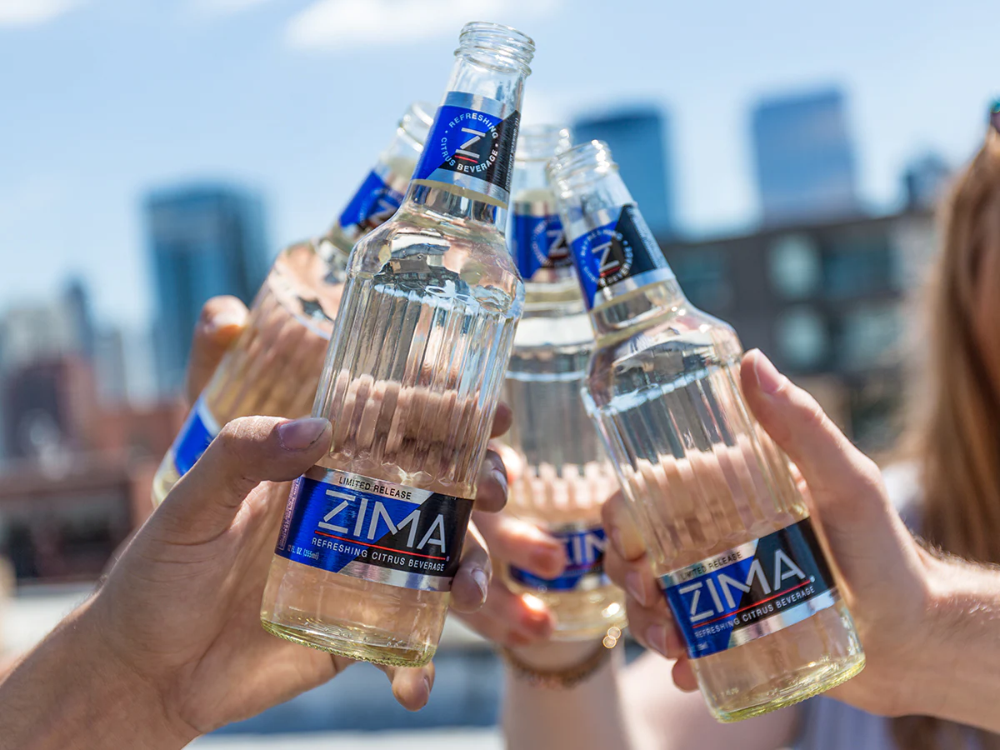

Authentic beverage
Zima Clearmalt is a clear, lightly carbonated alcoholic beverage made and distributed by the Coors Brewing Company or its licensees. Introduced in 1993, it was marketed as an alternative to beer, an example of what is now often referred to as a cooler, with 4.7–5.4% alcohol by volume.Its production in the United States ceased in October 2008, but it was still marketed in Japan until 2021, when sales ended due to the impact of the COVID-19 pandemic before returning in 2023.On June 2, 2017, MillerCoors announced a limited release of Zima for the U.S. market. It was sold again in the U.S. in the summers of 2017 and 2018, but did not return in 2019.
Zima's early marketing stressed that it was a manly product perfect for young men who wanted an alternative to beer (via Mental Floss). The conventional marketing wisdom of the time was that men wouldn't touch any product associated with women or femininity. Beverage consultant Tom Pirko told The Washington Post in 1993 that he worried that young men would decide that clear beer was "a sissy beer."
Zima's flavor issues didn't come from a lack of effort on Coors' part. According to the Miami New Times, the brewery enlisted scientists from multiple disciplines to work for months developing the product and thoroughly tested it with focus groups before finalizing the formula. It performed well in the initial test markets where it was released in 1992. Nothing could have prepared the company for the negative reception Zima got once it went national. Apparently, nobody in the focus groups said that Zima tasted like "tonic water and antifreeze," "icky beer," or "flat Sprite," as the Miami New Times quotes some drinkers in 1995 as saying.
 Start Exploring